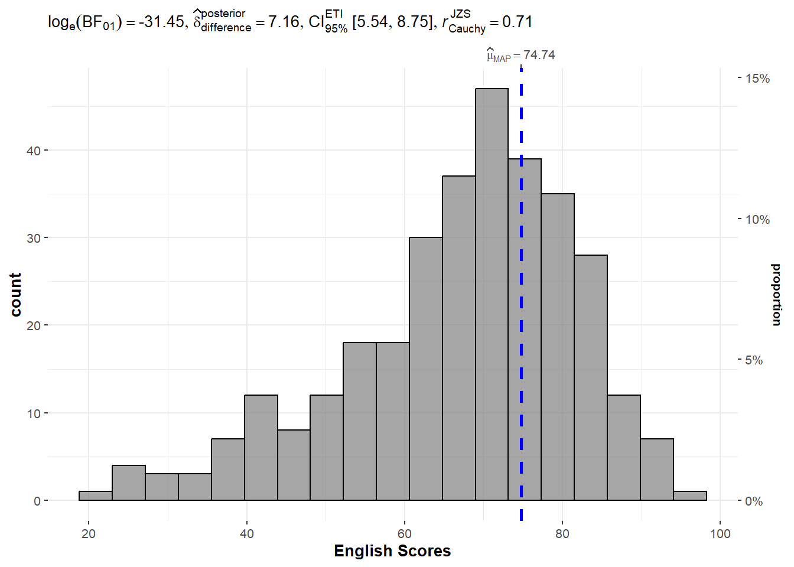
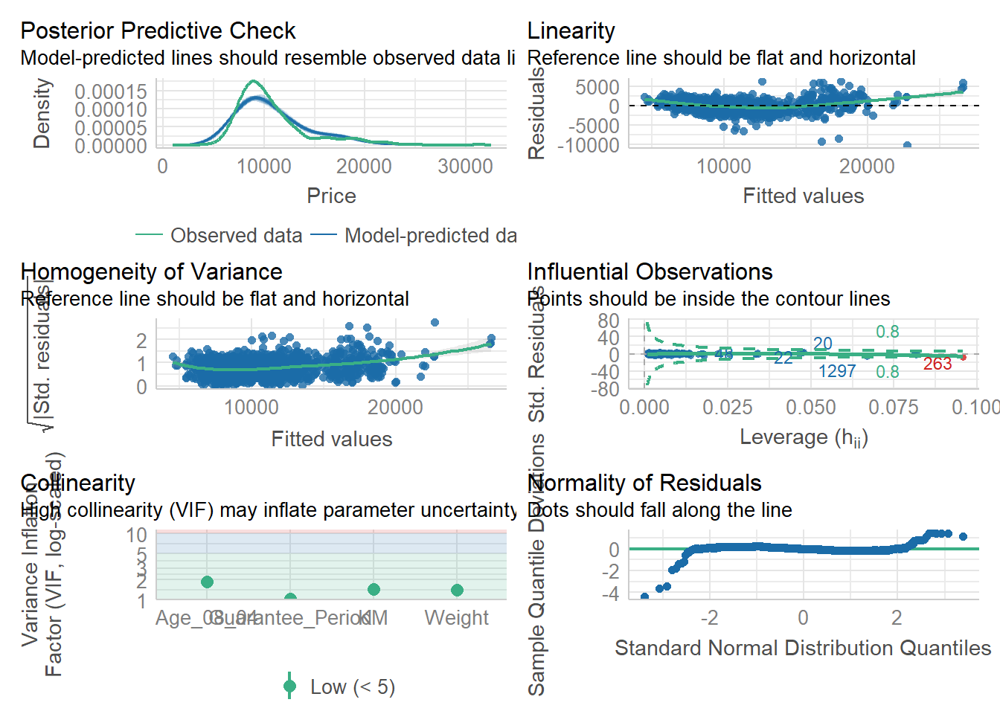

pacman::p_load(tidyverse, readxl,
ggstatsplot,
performance, parameters,
see)Hands-on Exercise 4B
10 Visual Statistical Analysis
10.1 Overview and Learning Outcomes
This hands-on exercise is based on Chapter 10 of the R for Visual Analytics book.
The learning outcomes are:
Use the ggstatsplot package to create visual graphics with rich statistical information;
It is an extension of the ggplot2 package for creating graphics with details from statistical tests included in the information-rich plots themselves.
This provides alternative statistical inference methods by default.
It also follows the best practices for statistical reporting. For all statistical tests reported in the plots, the default template abides by the APA standard for statistical reporting.
Use the performance package to visualise model diagnostics; and
Use the parameters package to visualise model parameters.
10.2 Getting Started
10.2.1 Installing and Loading Required Libraries
In this hands-on exercise, the following R packages are used:
tidyverse (i.e. readr, tidyr, dplyr) for performing data science tasks such as importing, tidying, and wrangling data; and
readxl for reading Excel files;
ggstatsplot for plotting statistics;
performance for assessment of model performance;
parameters for processing of model parameters; and
see for model visualisation in ggplot2 and easystats.
The code chunk below uses the p_load() function in the pacman package to check if the packages are installed. If yes, they are then loaded into the R environment. If no, they are installed, then loaded into the R environment.
10.2.2 Importing Data
The datasets for this hands-on exercise are imported into the R environment:
Using the
read_csv()function in the readr package and stored as the R object,exam.Using the
read_xls()function in the readxl package and stored as the R object, car_resale.
exam = read_csv("data/Exam_data.csv")
car_resale = read_xls("data/ToyotaCorolla.xls",
"data")The tibble data frame, exam, has 7 columns and 322 rows.
It consists of the year-end examination grades of a cohort of 322 Primary 3 students from a local school.
The 7 variables/attributes are:
Categorical: ID, CLASS, GENDER, and RACE.
Continuous: MATHS, ENGLISH, and SCIENCE.
The tibble data frame, car_resale, has 38 columns and 1,436 rows.
head(car_resale)# A tibble: 6 × 38
Id Model Price Age_08_04 Mfg_Month Mfg_Year KM Quarterly_Tax Weight
<dbl> <chr> <dbl> <dbl> <dbl> <dbl> <dbl> <dbl> <dbl>
1 81 TOYOTA Co… 18950 25 8 2002 20019 100 1180
2 1 TOYOTA Co… 13500 23 10 2002 46986 210 1165
3 2 TOYOTA Co… 13750 23 10 2002 72937 210 1165
4 3 TOYOTA C… 13950 24 9 2002 41711 210 1165
5 4 TOYOTA Co… 14950 26 7 2002 48000 210 1165
6 5 TOYOTA Co… 13750 30 3 2002 38500 210 1170
# ℹ 29 more variables: Guarantee_Period <dbl>, HP_Bin <chr>, CC_bin <chr>,
# Doors <dbl>, Gears <dbl>, Cylinders <dbl>, Fuel_Type <chr>, Color <chr>,
# Met_Color <dbl>, Automatic <dbl>, Mfr_Guarantee <dbl>,
# BOVAG_Guarantee <dbl>, ABS <dbl>, Airbag_1 <dbl>, Airbag_2 <dbl>,
# Airco <dbl>, Automatic_airco <dbl>, Boardcomputer <dbl>, CD_Player <dbl>,
# Central_Lock <dbl>, Powered_Windows <dbl>, Power_Steering <dbl>,
# Radio <dbl>, Mistlamps <dbl>, Sport_Model <dbl>, Backseat_Divider <dbl>, …10.3 Using ggstatsplot Methods
10.3.1 One-sample Test: gghistostats()
The gghistostats() function is used to to build a plot of a one-sample test for English scores.

set.seed(1234)
gghistostats(data = exam,
x = ENGLISH,
type = "bayes",
test.value = 60,
xlab = "English Scores")Default information:
Statistical details;
Bayes factor;
Sample sizes; and
Distribution summary.
Observation: Using the test value of 60, the value of LOG(BF01) of -31.45 shows that there is strong evidence that the null hypothesis (that the mean value is 60) is rejected. In fact, the mean score is higher than 60.
10.3.2 Unpacking the Bayes Factor
A Bayes factor is the ratio of the likelihood of one particular hypothesis to the likelihood of another. It can be interpreted as a measure of the strength of evidence in favour of one theory among two competing theories.
The Bayes factor is a way to evaluate the data in favour of a null hypothesis, and to use external information to do so. It tells us what the weight of the evidence is in favour of a given hypothesis.
When comparing two hypotheses, H1 (the alternate hypothesis) and H0 (the null hypothesis), the Bayes factor is often written as B10.
The Schwarz criterion is one of the easiest ways to calculate a rough approximation of the Bayes factor.
10.3.3 How to Interpret Bayes Factor
A Bayes factor can be any positive number. One of the most common interpretations was first proposed by Harold Jeffereys (1961) and slightly modified by Lee and Wagenmakers in 2013.
10.3.4 Two-sample Mean Test: ggbetweenstats()
The ggbetweenstats() is used to build a plot of a two-sample mean test of Maths scores by gender.

ggbetweenstats(data = exam,
x = GENDER,
y = MATHS,
type = "np",
messages = FALSE)Default information:
Statistical details;
Bayes factor;
Sample sizes; and
Distribution summary.
Observation: The p-value of 0.91 means that there is insufficient evidence to reject the null hypothesis that the mean Maths scores between the two genders are the same.
10.3.5 One-way ANOVA Test: ggbetweenstats()
The ggbetweenstats() is used to build a plot for a one-way ANOVA test on English scores by race.

ggbetweenstats(data = exam,
x = RACE,
y = ENGLISH,
type = "p",
mean.ci = TRUE,
pairwise.comparisons = TRUE,
pairwise.display = "s",
p.adjust.method = "fdr",
messages = FALSE)For “pairwise.display” argument:
“ns” means only non-significant;
“s” means only significant; and
“all” means everything.
Observation: The p-value of 1.71e-04 means that there is sufficient evidence to reject the null hypothesis that the mean English scores between the four races are the same.
10.3.6 Significant Test of Correlation: ggscatterstats()
The ggscatterstats() function is used to build a plot for a significant test of correlation between Maths scores and English scores.

ggscatterstats(data = exam,
x = MATHS,
y = ENGLISH,
marginal = FALSE)Observation: The p-value of 1.70e-83 means that there is sufficient evidence to reject the null hypothesis that there is no correlation between Maths scores and English scores.
10.3.7 Significant Test of Association (Dependence): ggbarstats()
The Maths scores is binned into a 4-class variable using the cut() function in the base R package.
exam1 = exam %>%
mutate(MATHS_bins = cut(MATHS,
breaks = c(0,60,75,85,100)))The ggbarstats() function is used to build a plot for a significant test of association.

ggbarstats(exam1,
x = MATHS_bins,
y = GENDER)Observation: The p-value of 0.79 means that there is insufficient evidence to reject the null hypothesis that there is no association between gender and binned Maths scores.
10.4 Visualising Models Using performance Package
Model diagnostic and model parameters are visualised using the performance and parameters packages. The Toyota Corolla case study is used. The goal is to build a model to discover factors affecting prices of used cars by considering a set of explanatory variables.
10.4.1 Multiple Regression Model with lm()
A multiple linear regression model is calibrated using the lm() function of the stats package.
model = lm(Price ~ Age_08_04 + Mfg_Year + KM +
Weight + Guarantee_Period, data = car_resale)
model
Call:
lm(formula = Price ~ Age_08_04 + Mfg_Year + KM + Weight + Guarantee_Period,
data = car_resale)
Coefficients:
(Intercept) Age_08_04 Mfg_Year KM
-2.637e+06 -1.409e+01 1.315e+03 -2.323e-02
Weight Guarantee_Period
1.903e+01 2.770e+01 10.4.2 Model Diagnostic: Checking for Multicollinearity
The check_collinearity() function is used to check for multicollinearity amongst the factors.
check_collinearity(model)# Check for Multicollinearity
Low Correlation
Term VIF VIF 95% CI Increased SE Tolerance Tolerance 95% CI
KM 1.46 [ 1.37, 1.57] 1.21 0.68 [0.64, 0.73]
Weight 1.41 [ 1.32, 1.51] 1.19 0.71 [0.66, 0.76]
Guarantee_Period 1.04 [ 1.01, 1.17] 1.02 0.97 [0.86, 0.99]
High Correlation
Term VIF VIF 95% CI Increased SE Tolerance Tolerance 95% CI
Age_08_04 31.07 [28.08, 34.38] 5.57 0.03 [0.03, 0.04]
Mfg_Year 31.16 [28.16, 34.48] 5.58 0.03 [0.03, 0.04]plot(check_collinearity(model))
Observation: There is high collinearity between age of car and manufacturing year, which is expected.
10.4.3 Model Diagnostic: Checking for Normality Assumption
The check_normality() function is used to check the normality assumption regarding the residuals in the model.
model1 = lm(Price ~ Age_08_04 + KM +
Weight + Guarantee_Period, data = car_resale)
plot(check_normality(model1))
Observation: Most residuals are distributed around zero, which implies that the model captures the main patterns and sources of variation in the data, and the errors are random and independent.
10.4.4 Model Diagnostic: Checking for Homogeneity of Variances
The check_heteroscedasticity() function is used to check for the homogeneity of variances in the model.
plot(check_heteroscedasticity(model1))
Observation: There is heteroscedasticity, i.e., the variances are not homogeneous.
10.4.5 Model Diagnostic: Complete Check
The complete check can be performed using the check_model() function.
check_model(model1)
10.5 Visualising Regression Parameters
The parameters of a regression model can be visualised using the plot() function in the see package, or the ggcoefstats() function in the ggstatsplot package.
10.5.1 Visualising Regression Parameters: plot()
plot(parameters(model1))
10.5.2 Visualising Regression Parameters: ggcoefstats()
ggcoefstats(model1,
output = "plot")
~~~ End of Hands-on Exercise 4B ~~~